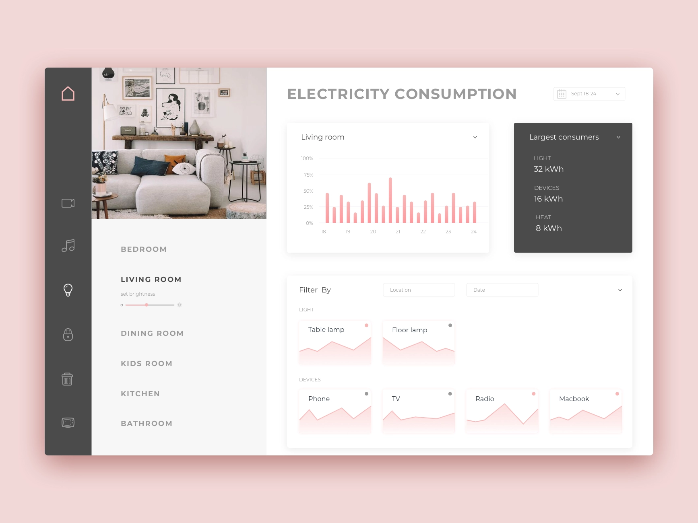
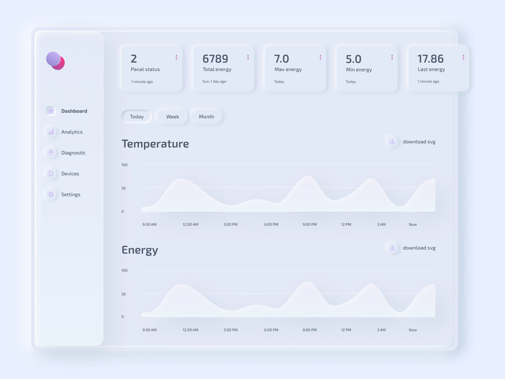
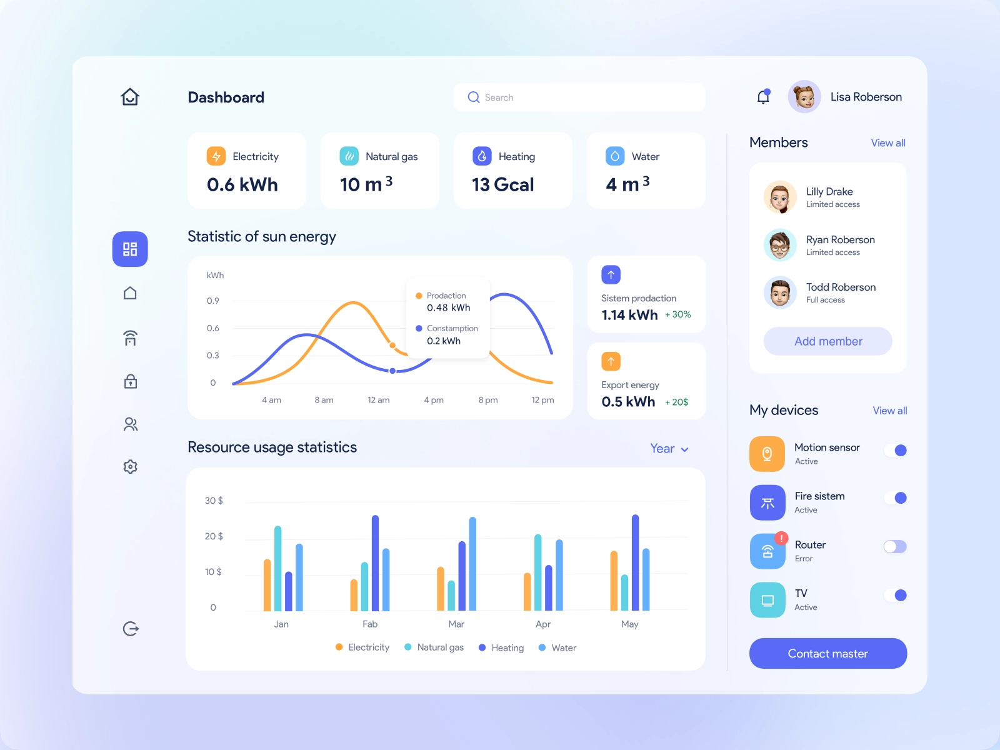
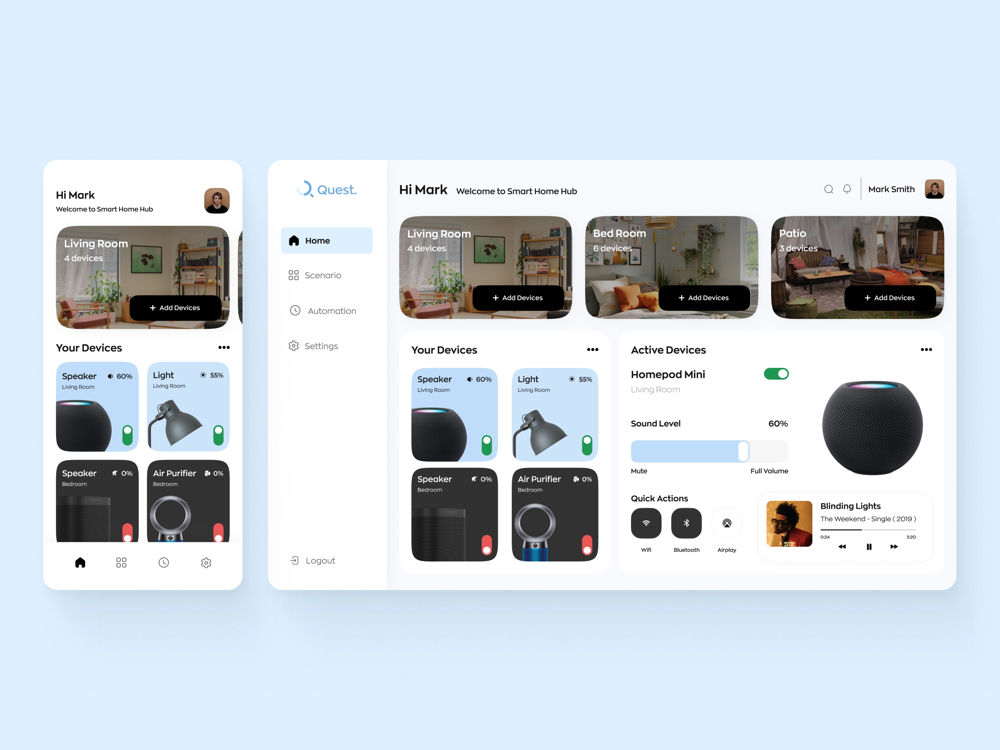

In App Smart Home Monitor
Modular design is everywhere these days and it allows developers to do amazing things with responsive web. As a designer, it’s so helpful to think and build in a modular way.
You’ll have to use a combination of former skills you’ve picked up along the way because this is a real challenge!
For this UI challenge, create a modular UI dashboard which provides a useful way to track and measure consumption of one or two household utilities.
Take a look at the list of potential inclusions and design an app which appeals to the modern family.

Potential Inclusions
- Lighting
- Temperature
- Nanny Cams
- Air Conditioning
- Refrigeration
- Gas
- Electricity
Inspiration

Source: https://dribbble.com/OlgaSaff

Source: https://dribbble.com/cleveroad

Source: https://dribbble.com/Atulya_26